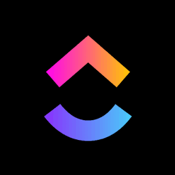

Experience
// three years in customer-facing roles across B2B SaaS and consumer platforms

Owns escalation and retention across SMB & Enterprise accounts — from daily proactive check-ins, to formal complaint response, to spotting expansion inside everyday product conversations.
Daily proactive outreach to self-service accounts — the main channel where renewal conversations actually happen and adoption issues get caught early, before they become churn risk.
Owning the response when clients raise formal complaints — leading escalation meetings, managing expectations, and rebuilding trust on high-value B2B accounts.
Negotiating directly with customers on concession requests — balancing what they're asking for against business policy on pricing and billing.
Revenue isn't always a conversation clients bring up directly — but the right product conversation can surface it. Opportunities I've qualified this way have exceeded $5K; it's an ongoing skill I keep sharp, not a fixed monthly number.
Guiding newer, smaller self-service customers — the group most likely to churn early without hands-on help — through workspace structure and setup best practices to shorten time-to-value.
Serving accounts across APAC, EMEA, and LATAM, with additional coverage for AMER — consultative product guidance alongside global teams.
Frontline support and knowledge management for Spotify's global user base — plus representing the Manila site on process and tooling rollouts.
- Helped pilot and launch the CRM used across the support org.
- Led SOP optimization work in Guru, the team's knowledge base — keeping process documentation accurate as workflows evolved.
skills
customer success
tools
core competencies
education
certifications
- ✓Project Management (Coursera x Google, 2025)
- ✓AI Fluency (Anthropic, 2026)